INSTALACIÓN Y CONFIGURACIÓN DE DRIVES Y SOFTWARE SEGÚN LOS REQUERIMIENTOS DEL USUARIO
Un Driver o controlador, es un programa que controla un dispositivo. Cada dispositivo, ya sea una impresora, un teclado, etc., debe tener un programa controlador. Muchos controladores, como el del teclado, vienen con el sistema operativo. Para otros dispositivos, puedes tener que instalar el nuevo controlador cuando conectas el dispositivo al ordenador. En Windows, los controladores normalmente tienen la extensión .drv. Un controlador actúa como un traductor entre el dispositivo y los programas que utilizan el dispositivo. Cada dispositivo tiene su propio sistema de comandos especializados que solamente conoce su controlador, sin embargo, la mayoría de los programas tienen acceso a los dispositivos usando comandos genéricos. El controlador, por lo tanto, acepta comandos genéricos de un programa y después los traduce a los comandos especializados para el dispositivo. La configuración del software es una actividad de autoprotección que se aplica para controlar los cambios a lo largo del ciclo de vida del software. Sus objetivos son: 1. Identificar los cambios 2. Controlar los cambios 3.Garantizar que los cambios se realicen adecuadamente 4.Auditar e informar de los cambios realizados al interesado. Diferencia entre mantenimiento de software y gestión de configuración del software El mantenimiento es un conjunto de actividades de ingeniería del software que se producen después de que se ha entregado al cliente y esté en funcionamiento Pasos para la instalación de un driver (impresora HP).
1.-Pulsa en la ventana el botón Usar disco. Introduce el CD.
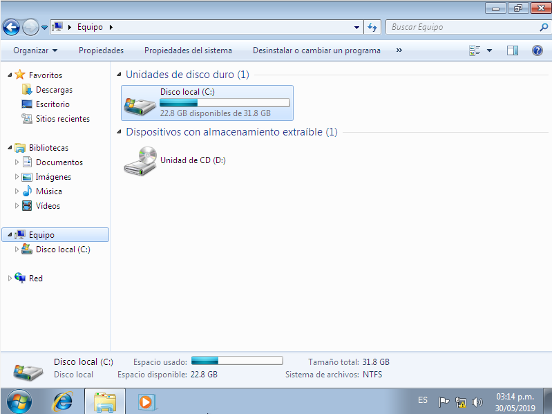
2.-Haz clic en Examinar. Se abre un explorador de carpetas, localiza en el CD el archivo con los controladores y dar doble clic sobre el.
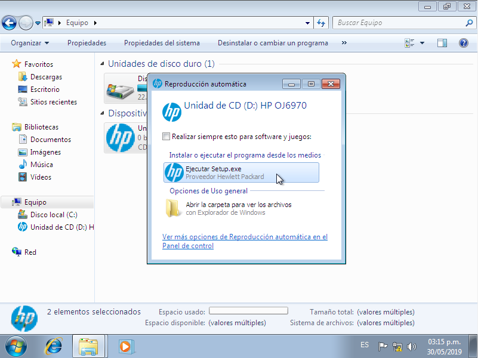
3.-Se muestra una pregunta de si ¿desea permitir que el programa realice cambios en el equipo? Dar clic en sí.
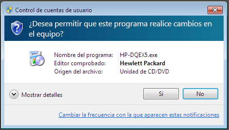
4.-Nos muestra que debemos conectarnos a internet para configurar el dispositivo dar clic en no gracias esperar a que cargue dar clic en continuar.
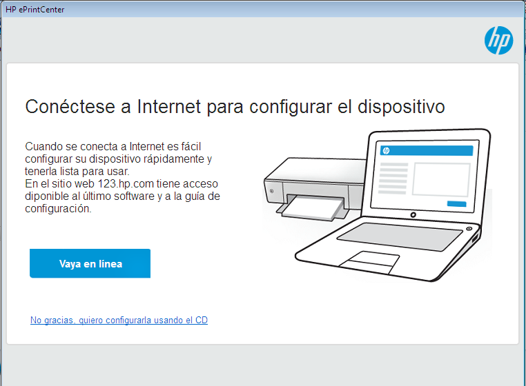 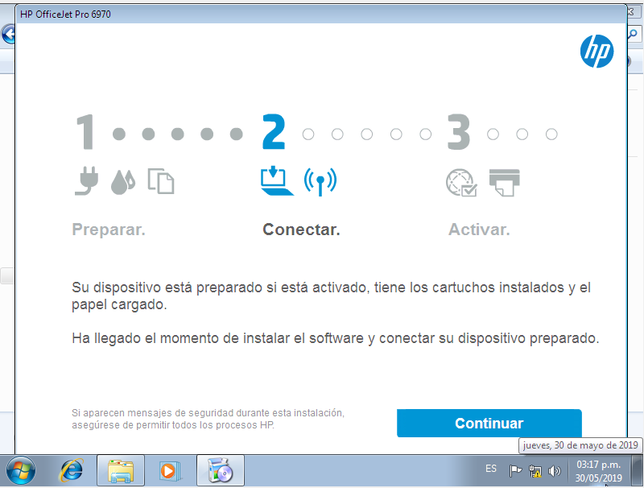
5.-Nos muestra la obtención del software por HP clic en siguiente.
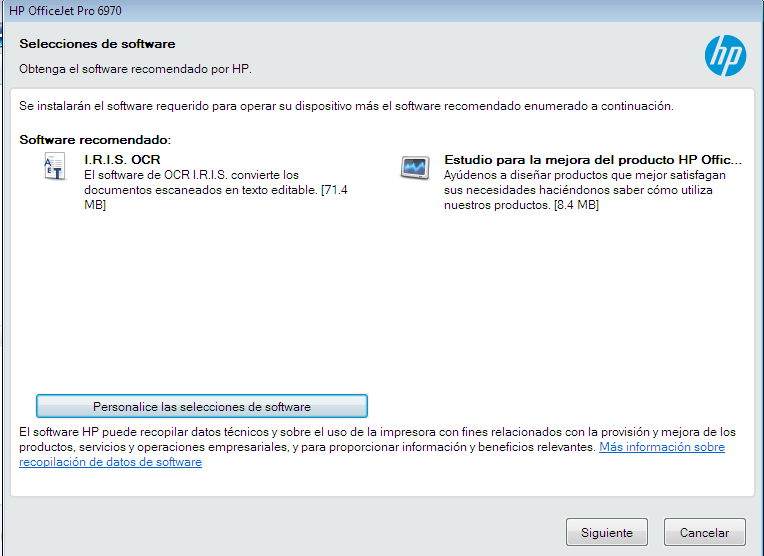
6.- Se muestran los acuerdos de instalación y configuración. Dar clic en he revisado y acepto los acuerdos y configuración de instalación clic en siguiente.
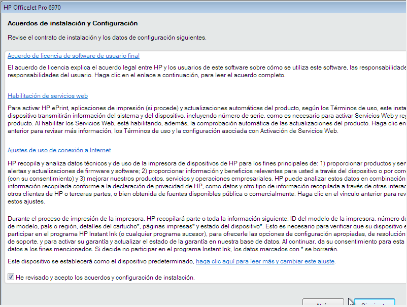
7.- Esperar a que se instale.
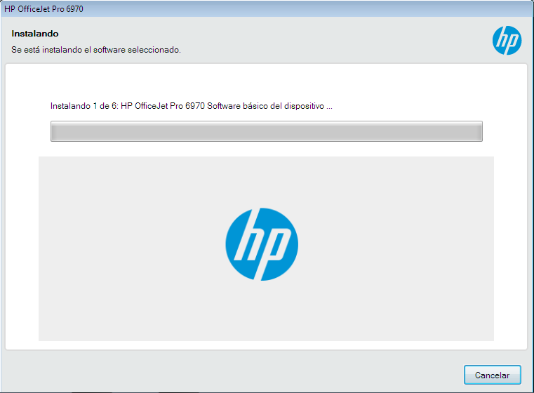 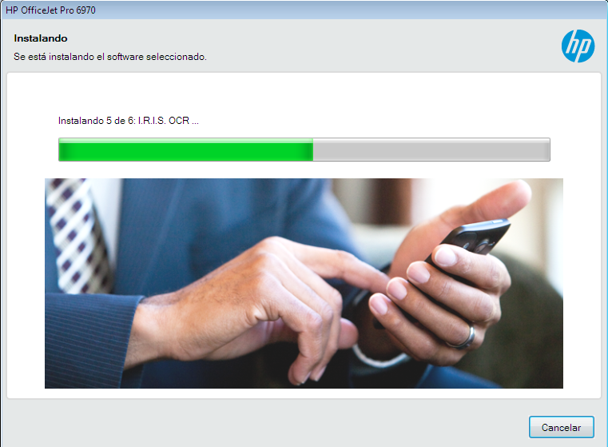
8.- Muestra una pregunta de ¿Cómo se va a conectar el dispositivo a su ordenador? Seleccionar conectar más tarde. Clic en siguiente.
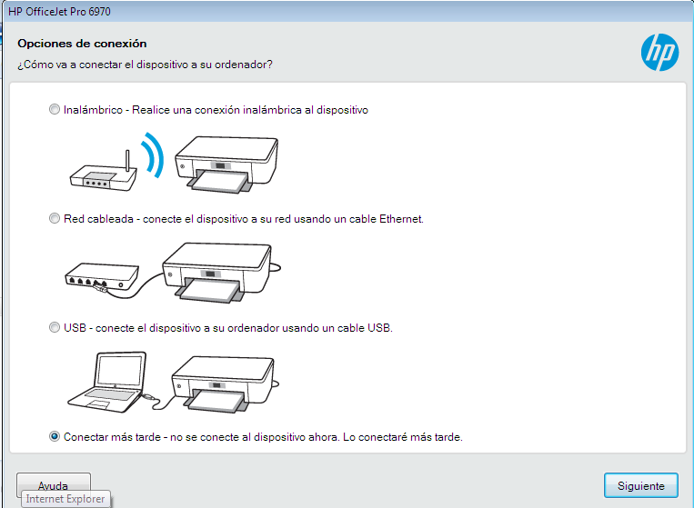
9.- Muestra que el dispositivo se ha instalado correctamente. Clic en finish.
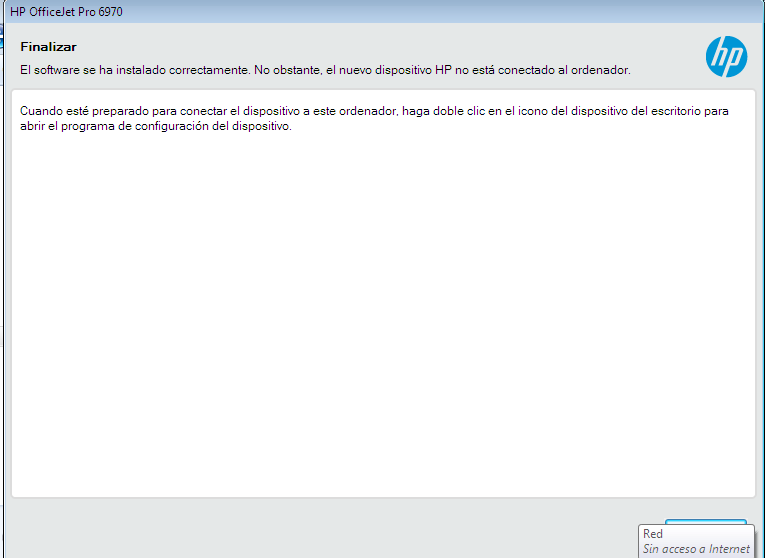
10.- Estará listo el driver para ser utilizado.
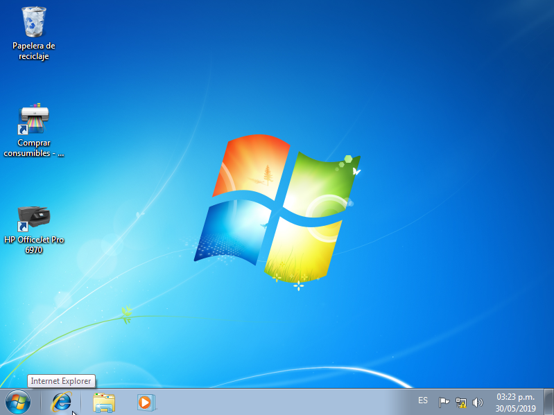
VIDEO